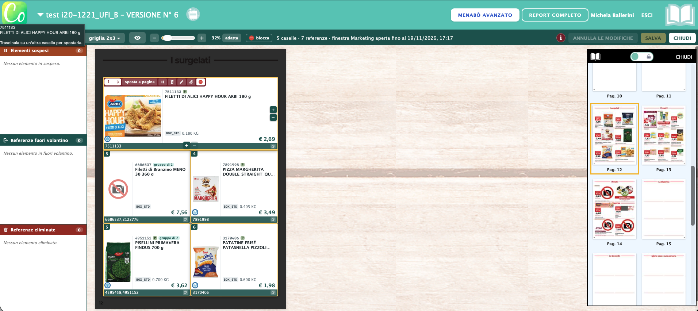
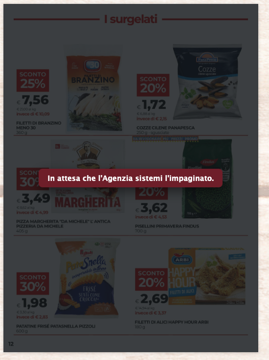
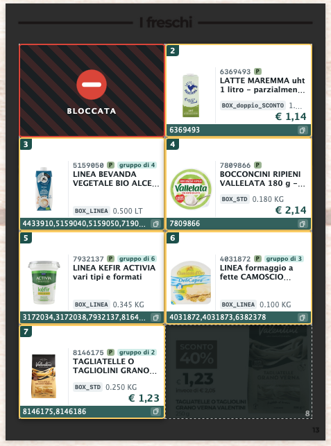
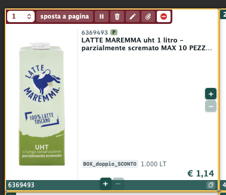
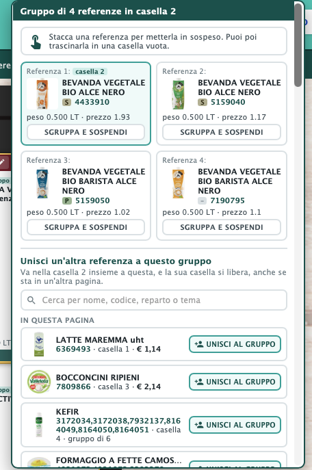
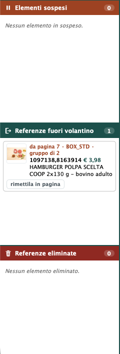
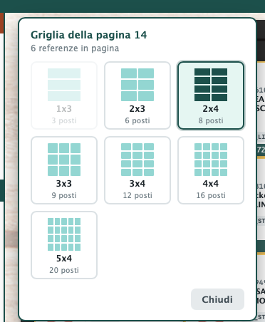

Guida ai pulsanti — Correggo4, versione del 17 novembre 2026
Il menabò avanzato serve a decidere dove va ogni referenza sul volantino: in quale pagina, in quale casella, quanto spazio prende, e quali referenze stanno insieme nello stesso box. Prezzi e descrizioni si correggono come sempre; dal menabò avanzato si arriva alla scheda con la matita.
Si apre col pulsante MENABÒ AVANZATO in alto nell'editor del volantino. Dentro, la barra verde dice ancora TIMONE: è il vecchio nome, e lo trovi anche in qualche messaggio. Tutto quello che si fa resta una bozza finché non si preme SALVA: chiudendo senza salvare non cambia niente.

Riguarda la pagina che stai guardando. Su una finestra stretta va su due righe.
| ‹› | Pagina precedente / successiva | Cambia pagina. Fra le due freccette c'è il numero della pagina, con accanto «di N»: si può scrivere dentro e premere Invio, che con quaranta pagine è più rapido che cliccare quaranta volte. |
| griglia 2x3 ▾ | La griglia della pagina | Dice in quante caselle è divisa la pagina e apre la scelta fra le sette griglie (capitolo 7), ognuna col suo disegno e i suoi posti. Quelle troppo piccole per le referenze della pagina sono spente. Cambiando griglia le referenze si ridistribuiscono, tenendo l'ordine che hanno. |
| Guarda com'era impaginato prima | Un clic e la pagina torna come è stampata adesso, senza le schede sopra; in barra compare «stai guardando l'impaginato di prima». Un altro clic (il pulsante dice «Torna al timone») e si torna al piano. Serve a confrontare il prima e il dopo. | |
| −+ | Zoom | Rimpicciolisce e ingrandisce il foglio, anche col cursore fra i due pulsanti; accanto ci sono la percentuale e adatta, che fa entrare la pagina nello spazio che resta. Oltre «adatta» la scheda di ogni casella si ingrandisce tutta insieme, scritte e foto comprese. |
| blocca | Il divieto da trascinare | Si prende da qui e si molla su una casella per bloccarla. È lo stesso divieto che trovi sulle caselle, ma parte da qui. C'è solo per chi può scrivere. |
| 6 caselle · 5 referenze | La riga di stato | Quante caselle e referenze ha la pagina, quante caselle sono bloccate e fino a quando è aperta la finestra del Marketing. |

| FATTO | Fatto (Agenzia) | Solo per l'Agenzia, quando il Marketing ha salvato delle modifiche e la finestra è chiusa: «Ho riportato sull'impaginato le modifiche del Marketing». Spegne l'avviso TIMONE nella home. Capitolo 8. |
| REPORT | Report (Agenzia) | Il report delle modifiche: cosa ha cambiato il Marketing, pagina per pagina. Capitolo 8. |
| FILTRI | Filtri (Agenzia) | Solo per l'Agenzia a finestra chiusa: scarica il pacchetto dei filtri da copiare nella cartella di lavorazione del plug-in. Capitolo 8. |
| i | La guida | Apre questa guida. |
| 3 modifiche non salvate | Il bollino giallo | Quante modifiche hai in mano e non hai ancora salvato. |
| ANNULLA LE MODIFICHE | Annulla le modifiche | Butta la bozza e rimette tutto come l'ultimo salvataggio. Non chiede al server: la bozza era solo tua. |
| SALVA | Salva | Scrive nel piano tutto quello che hai fatto. SALVA e ANNULLA ci sono sempre per chi può scrivere, e restano spenti finché non c'è niente da salvare. |
| CHIUDI | Chiudi | Esce dal menabò avanzato. Se ci sono modifiche non salvate chiede cosa fare: «Salva ed esci», «Esci senza salvare» o «Torna indietro». Anche il tasto Esc chiude: prima la finestrella aperta, poi il report, poi il menabò avanzato. |
Ogni referenza in pagina è una scheda su fondo bianco: la foto del prodotto presa da Istanta, la pastiglia P o S, il codice, la descrizione che va in stampa, la meccanica del box (BOX_STD, BOX_FID…), il peso e il prezzo. Se la casella è piccola la scheda mostra meno cose: prima spariscono meccanica e peso, e nelle caselle più piccole restano la foto col prezzo e il codice nella striscia in fondo. Il numero in alto a sinistra è il numero della casella.

Sulla casella ci sono il numero, il codice con la pastiglia P o S, l'etichetta «gruppo di N» quando è un gruppo, la descrizione, la meccanica, il peso e il prezzo; in fondo, nella striscia verde, il codice intero col pulsante per copiarlo.
Una casella libera resta trasparente e lascia vedere com'è impaginata adesso quella parte della pagina.
C'è solo per chi può scrivere: in sola lettura resta soltanto la matita. Se a destra non c'è spazio, esce a sinistra.

| 3 ▾ | Il numero della casella | Aprendolo si sposta la referenza in un'altra casella della stessa pagina. Le caselle bloccate sono elencate ma non si possono scegliere. |
| sposta a pagina | Sposta a pagina | Apre l'elenco delle pagine, ognuna con le caselle occupate e i posti: la referenza arriva nella casella 1 e le altre scalano. C'è anche il campo «manda a pagina» per scrivere il numero. Su una pagina piena la griglia si allarga da sola. |
| Metti in sospeso | La toglie dalla pagina ma la tiene da parte, nel primo pannello a sinistra. È il «devo ancora decidere». | |
| Togli dal volantino | Apre due scelte: Fuori volantino (non va in pagina, ma è una scelta fatta apposta) oppure Eliminata (non deve più andarci). Nessuna delle due blocca il salvataggio. | |
| Modifica referenza | Apre la scheda dell'Edit avanzato su questo prodotto: prezzi, foto, loghi e azioni, le stesse cose che fai dall'editor. Va salvato prima il menabò avanzato, perché la correzione della scheda si salva subito. Su un gruppo di referenze di box diversi la matita funziona in un altro modo: capitolo 5. | |
| Gruppo e unione | Apre la finestra del gruppo: le referenze che stanno in questa casella, il modo di staccarne una e l'elenco di quelle da unire. È il capitolo 4. | |
| Blocca questa casella | Qui non deve andare niente, perché ci va un elemento grafico. La referenza che c'era scorre nella prima casella libera dopo. | |
| +− | Le maniglie per allargare | Sul bordo destro allargano e stringono la referenza di una casella, sul bordo in basso la alzano e la abbassano. Se nella griglia di adesso non ci sta, la griglia si allarga da sola e te lo dice. |
| Copia il codice | Nella striscia verde in fondo alla casella, anche in sola lettura. Mette negli appunti il codice intero, anche quando si vede tagliato coi puntini: un gruppo di nove referenze ha un codice da settanta caratteri. Dopo il clic compare la spunta. |
| Blocca una casella vuota | Passando col mouse su una casella vuota compare il divieto: cliccandolo la casella diventa a righe con la scritta BLOCCATA, e nessuna referenza ci andrà. | |
| ✕ | Libera la casella | Sulla casella bloccata, col mouse sopra: la sblocca. |
Un gruppo è un box che contiene più referenze: una descrizione, una foto, un prezzo, e una casella sola. È il motivo per cui esiste: prendere meno spazio sul volantino. Sulla casella si vede l'etichetta «gruppo di 3» e nella striscia in fondo il codice di tutte, separato da virgole. La foto e la descrizione che vedi sono quelle della referenza primaria di Istanta, che è quella che va in stampa: non è sempre quella che tiene la casella.
La graffetta sulla casella apre la finestra del gruppo, qui a fianco: sopra le referenze del gruppo, una per cartoncino, sotto quelle che si possono unire. Le voci sono spiegate qui sotto.

| Gruppo di 3 referenze in casella 2 | La fascia verde | Quante referenze ha il gruppo e in quale casella sta. Sotto, con la mano , cosa si può fare. |
| PS | Le referenze del gruppo | Un cartoncino per referenza, affiancati: foto, nome, la pastiglia P, S o – (primaria, secondaria o non selezionata in Istanta), il codice, il peso e il prezzo. Quella che tiene la casella ha la pastiglia «casella 2». |
| SGRUPPA E SOSPENDI | Stacca dal gruppo | La referenza esce dal gruppo e va in sospeso: da lì la rimetti in pagina dove vuoi. Se stacchi quella che tiene la casella e nel gruppo restano in tre o più, ti chiede a chi passarla; se restano in due passa da sola. |
| Cerca | Nella parte «Unisci un'altra referenza a questo gruppo»: filtra l'elenco per nome, codice, reparto o tema. | |
| UNISCI AL GRUPPO | Unisci un'altra referenza | L'elenco di quelle che puoi far entrare in questa casella, diviso in in questa pagina, nelle altre pagine e in sospeso. Entrando, la loro casella si libera, anche se sta in un'altra pagina. |
| ● | Il pallino arancione | Su una riga dell'elenco vuol dire che quella referenza ha un prezzo promo diverso da questa casella. Si unisce comunque, ma prima ti dice i due numeri e quale dei due si stampa. |
Un gruppo fatto nel menabò avanzato con referenze di box diversi dell'impaginato non ha ancora un box suo. Per questo la matita, su un gruppo così, apre la scheda dell'Edit avanzato con le referenze di tutto il gruppo (prezzi e azioni, descrizione, foto P/S, loghi), ma la correzione resta nel menabò avanzato:
| SALVA | SALVA della scheda | «SALVA tiene la modifica nel timone: arriva all'Agenzia con il SALVA del timone.» La correzione entra nella bozza; va salvato poi il menabò avanzato. Non si propaga ad altri volantini. |
| P | Le foto proposte | Finché non scegli tu, la primaria proposta è la foto della referenza che tiene la casella, e le altre sono secondarie. |
| SGRUPPA E SOSPENDI | Gruppo sciolto | Sciogliendo il gruppo la correzione si perde. Se cambia chi tiene la casella, la correzione passa a lui. |
Nel report la correzione esce come GRUPPO MODIFICATO, con quello che l'Agenzia deve riportare a mano. La scheda si modifica solo dal Marketing a finestra aperta; l'Agenzia la vede in sola lettura.
Ogni riga porta la foto della referenza, da che pagina viene, la meccanica, il codice, il prezzo e la descrizione, con il pulsante rimettila in pagina, che chiede in quale pagina. Un gruppo occupa una riga sola, non tre. In testa a ogni pannello c'è quante referenze contiene.

| Elementi sospesi | Quello che hai tolto dalla pagina e devi ancora sistemare. Finché ce n'è anche uno, il menabò avanzato non si salva: vanno rimessi in pagina, o mandati fuori volantino, o fra le eliminate. | |
| Referenze fuori volantino | Non vanno in pagina, ma è una scelta fatta apposta. Non bloccano il salvataggio. | |
| Referenze eliminate | Non devono più andare sul volantino. Non bloccano il salvataggio. |
La griglia divide la pagina in caselle. Sono sette e fisse; il primo numero sono le colonne, il secondo le righe. Le caselle si contano per righe, da sinistra a destra.

Si sceglie dal pulsante della griglia in barra. Quelle che non bastano per le referenze della pagina sono spente; quella di adesso è evidenziata.
Il pulsante REPORT in barra, solo per l'Agenzia, apre il report del piano salvato: per ogni pagina cambiata, le referenze con «DOV'ERA → ADESSO» e sotto le correzioni fatte nell'editor su quella pagina (note, timbri, Edit avanzato). Le pagine senza modifiche sono solo elencate in una riga. Ogni voce ha le sue etichette colorate:
SPOSTATACAMBIATA DI PAGINATOLTA DAL VOLANTINO ELIMINATAIN SOSPESOSCIOLTA DAL GRUPPO UNITA A UN GRUPPOGRUPPO CAMBIATOALLARGATA GRUPPO MODIFICATOCASELLA TENUTACORREZIONI
| FILTRA | Il filtro | Una spunta per etichetta, con SELEZIONA TUTTE e DESELEZIONA TUTTE: mostra solo le voci con almeno un'etichetta scelta e nasconde le pagine rimaste vuote. Vale solo a schermo: stampa e PDF escono completi. |
| VEDI PREVIEW | La preview di una pagina | In fondo a ogni pagina: affianca PRIMA, la pagina com'è arrivata su Correggo, e DOPO, lo schema della pagina secondo il piano. |
| MOSTRA PREVIEW COMPLETA | Tutte le pagine | In fondo al report: la preview prima/dopo di tutte le pagine del volantino, con «SENZA MODIFICHE» su quelle ferme. |
| STAMPAESPORTA PDF | Stampa e PDF | STAMPA usa la stampa del browser. ESPORTA PDF scarica il file «Report timone - titolo - vN - data.pdf» con il report completo e, in coda, la preview di tutte le pagine. Se il PDF non si può fare, il messaggio dice perché: con STAMPA si può scegliere «Salva come PDF». |
Nell'editor, accanto a MENABÒ AVANZATO, Agenzia e Marketing trovano REPORT COMPLETO quando il volantino ha un piano salvato: scarica nei Download lo stesso PDF del report. Se il server non può produrlo, si apre la stampa del browser con lo stesso report.
| FILTRI | Il pacchetto per il plug-in | Scarica uno .zip con i filtri delle pagine, l'elenco delle referenze escluse, il piano e un LEGGIMI: si copia nella cartella di lavorazione del plug-in, che impagina seguendo il piano. Prima va salvato. |
| FATTO | Ho finito | Quando le modifiche del Marketing sono riportate sull'impaginato: chiede «Hai finito con questo volantino?» e, con «Sì, ho finito», spegne l'avviso TIMONE che lampeggia nella home. Con modifiche non salvate chiede prima di salvare. |
Spostare, allargare, bloccare, sgruppare, correggere un gruppo con la matita: niente va al server prima di SALVA. Il bollino giallo dice quante modifiche hai in mano. Chiudendo, se ce ne sono, il menabò avanzato te lo chiede.
È voluto: il sospeso vuol dire «non ho ancora deciso», e un piano con dentro un pezzo non deciso non si salva. Sistemali e salva.
Il Marketing scrive mentre la finestra del Marketing è aperta, l'Agenzia quando è chiusa. Fuori dal proprio momento il menabò avanzato si apre in sola lettura, e la barra dice perché.
A finestra chiusa le pagine toccate si oscurano nell'editor normale con la scritta «In attesa che l'Agenzia sistemi l'impaginato», e su quelle si lavora solo dal menabò avanzato. L'Agenzia le vede segnate nel pannello delle pagine e continua a lavorare normalmente. Quando reimpagina e reimporta il volantino, le pagine si sbloccano da sé: non c'è niente da premere.
La matita apre la scheda dell'Edit avanzato, e lì valgono i permessi di quella scheda: il Marketing salva le correzioni, l'Agenzia le conferma. Per questo la matita c'è anche quando il menabò avanzato è in sola lettura. Fanno eccezione i gruppi di box diversi (capitolo 5).
I messaggi che il menabò avanzato può darti, e cosa vogliono dire.
| ! | «Non si e' potuto salvare» | Se dice «Ci sono N elementi in sospeso», nel primo pannello a sinistra c'è ancora qualcosa da sistemare: rimettilo in pagina, o mandalo fuori volantino o fra le eliminate, e risalva. |
| ! | «Non ci stanno tutte» | La griglia che hai scelto ha meno posti di quello che c'è in pagina. Il messaggio ti dice qual è la più piccola che le contiene tutte. |
| ! | «Non ci sta» | Hai trascinato una referenza allargata in un punto dove il suo spazio non è tutto libero: va messa dove c'è spazio, o prima ristretta con le maniglie. |
| ! | «Non ci sta da nessuna parte» | La pagina di arrivo è piena e nessuna griglia è abbastanza grande per una referenza in più: prima va tolto qualcosa da quella pagina. |
| ! | «Di misura diversa» | Hai trascinato una referenza allargata su un'altra di misura diversa: le due non si possono scambiare. |
| ! | «Prima la griglia» | La pagina non ha ancora una griglia, e senza griglia le caselle non ci sono: scegline una, poi blocca la casella o allarga la referenza. |
| ! | «Prima salva il timone» | Hai premuto la matita con delle modifiche non salvate. La correzione della scheda si salva subito, gli spostamenti no: se si mescolano, al primo ricaricamento ti ritrovi la correzione salvata e gli spostamenti persi. Premi SALVA IL TIMONE e riapri la matita. Sui gruppi di box diversi non compare, perché lì la correzione resta nella bozza. |
| ! | «I prezzi promo sono diversi» | Stai unendo due referenze con prezzi diversi. Il messaggio ti dice i due numeri e quale dei due si stampa: quello di chi tiene la casella. Puoi premere UNISCI COMUNQUE; se il prezzo non è quello giusto, si cambia dalla matita. |
| ? | La foto non si vede | Se al posto della foto c'è l'immagine «nessuna foto», a sistema non c'è una foto per quella referenza: la si carica dalla matita, con Carica nuova foto. Se invece c'è scritto «carico…», la si sta ancora chiedendo a Istanta: arriva da sé. |
| ? | La foto cambiata non si aggiorna | Cambiando la foto dalla matita, nella casella la nuova si vede dopo aver ricaricato la pagina. |
| ? | Non trovo i pulsanti sulla casella | La striscia dei comandi compare passando col mouse sopra la casella, e solo a chi può scrivere: in sola lettura resta la matita. Sulle griglie fitte può uscire dai bordi, ed è l'unico modo per averli tutti. |
| ? | Tutto è in sola lettura | Non è il tuo momento: il Marketing scrive a finestra aperta, l'Agenzia a finestra chiusa. Il motivo è scritto in barra, accanto a «sola lettura». |
Guida scritta il 17 novembre 2026 sulla versione j328 del menabò avanzato. Ogni icona di questa guida è la stessa che vedi nell'applicazione: sono prese dal file del menabò avanzato, non ridisegnate.